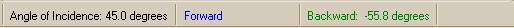

The BSDF Fit status bar is located on the footer of Graph window.

The first bell on the left shows the angle of incidence, which is used
to measure the set of BSDF data that has focus.
The second and third cells show the forward and backward scatter
locations in degrees.